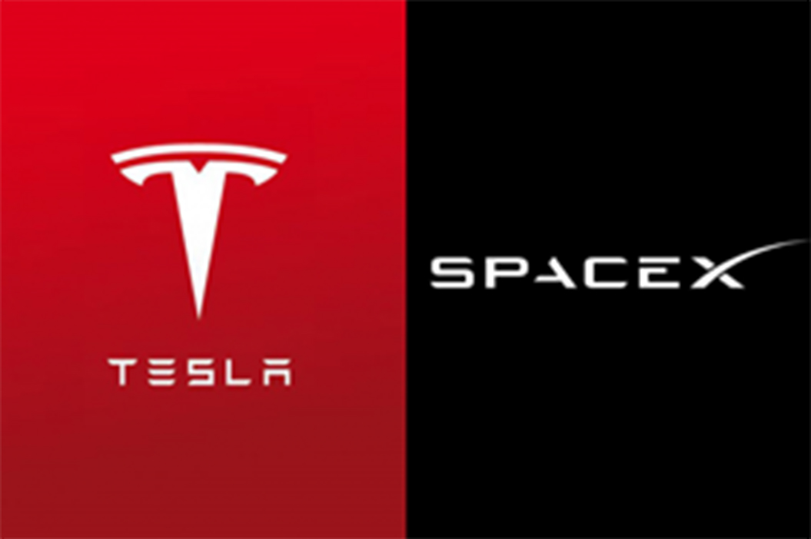

<meta charset="utf-8">
<script src="SRC/js/header.js"></script>
<main class="products_detail">
    <script src="SRC/js/_products_detail_top.js"></script>
    <div  id="tab-nav"></div>
    <div class="tab-nav">
        <div class="tab-nav-bg">
            <div class="full">
                <div class="prod-left">            
                    <a href="products_detail.html#tab-nav">專案內容</a>
                          
                    <a href="products_detail_event.html#tab-nav" class="checked">相關活動</a>
                      
                    <a href="products_detail_comments.html#tab-nav">互動</a>
                       
                    <a href="products_detail_faq.html#tab-nav">FAQ</a>
                     
                    <a href="products_detail_list.html#tab-nav">捐款名單</a>
                </div>
                <div class="prod-right"></div>         
            </div>             
        </div>
    </div>
    <div class="prod-bottom full">
        <div class="tab-content">
            <div class="user_editor ">
                <p style="color: #c00;margin: 50px 0">※以下為圖文編輯器，可由後台新增/編輯，圖片寬度建議 1100px 以下。</p>
                
                <p style="font-size: 30px;margin: 40px auto;">特斯拉成為美國工科學生最嚮往企業 No.1，第二名則由 SpaceX 拿下</p>
                <p>
                    最新調查顯示，馬斯克帶領的二間公司已成為最吸引美國工學院學生的夢幻企業，一個叫 Tesla，另一個是 SpaceX，而它們分別拿下冠軍和亞軍。顧問公司 Universum 最新發布 2020 年學生嚮往企業排名 (World’s Most Attractive Employers | 2020)，調查對象為全球最大 12 個經濟
                </p>
            </div>    
        </div>
        <div class="prod-right">
            <script src="SRC/js/_other-buy.js"></script>
        </div>        
    </div>

    

</main>

<script src="SRC/js/footer.js"></script>
